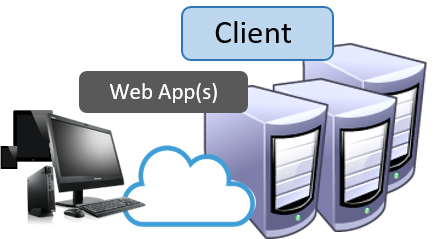
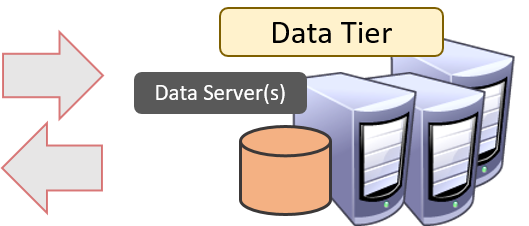
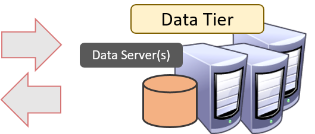
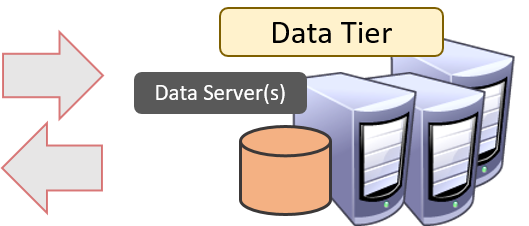
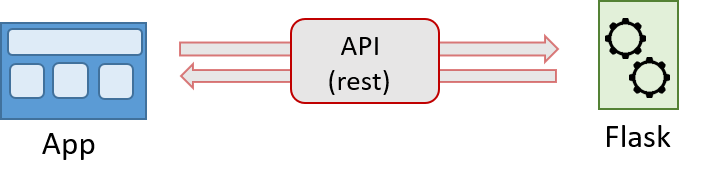
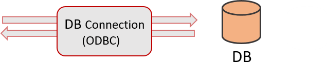

Web Services using Python & Flask
Why Use Web Services?
- An application needs data which is usually stored in a database on a server
- A web service provides a communication layer with a database/data store to retrieve data to be used in the application
- A web service also provides methods to access data that can be formatted into specific data structures and run processes on the server to return processed data the client won't need to process
Common Service Types
- SMTP – (Simple Mail Transfer Protocol) email/messaging services
- FTP – (File Transfer Protocol) Data/File transfer service
- SOAP – (Simple Object Access Protocol) XML based data transfer through HTTP
- REST – (Representational State Transfer) Typically JSON based data transfer through HTTP
REST
- Stateless
- Completely decoupled from the client
Client/Server Communication

 




Simple Client AJAX Request
let endpoint = 'http://localhost:5000/users';
let xhr = new XMLHttpRequest();
xhr.onload = function(){
console.log(this.response);
}
xhr.open("GET", endpoint, true);
xhr.send();
Creating Custom Web Services
- RESTful Services can be created from many different programming languages and frameworks
- Java, ASP.NET, php, Swift, Node.js, Ruby on Rails, Python, etc
- Why Python?
- We already have a huge library of custom Python modules
- Tons of Third Party modules available
Python Web Frameworks
- Django, Flask, Bottle, Twisted, Cherry Py, Tornado, etc
- Django and Flask seem to be the most widely used
- "The Navy uses Django, Pirates use Flask"
- Well, I guess we are Pirates...
Flask
- Python based micro web framework
- Very Fast Performance for REST Services
- Less Overhead than Django
- Simple setup, can be and running in 2 minutes
- Has many extensions, such as Flask-SqlAlchemy to support database Object Relational Mapping (ORM)
- Can also be used to create entire web applications (front and back end) completely written in Python via Jinja2 templates.
Minimal working app
from flask import Flask, jsonify
app = Flask(__name__)
@app.route('/', methods=['GET'])
def hello_world():
return jsonify({'message': 'Hello, World!'})
if __name__ == '__main__':
app.run(port=5001, debug=True) #Running on http://127.0.0.1:5001/ (localhost)
Security
- Adding Security is very simple in flask
- flask_jwt - built in security using JWT (JSON Web Tokens)
- Not very secure, easy to hack
- Custom Security
- We have created our own custom Token Based Security
- Supports a named user model as well as Active Directory Integration
- Each token has a expiration time (defaults to 8 hours)
- Token info stored in SQLite Database
Deployment for Production
- Can be deployed to IIS, Apache, or even hosted options like Heroku or Cloud9
- Deploying on IIS
- Requires FastCGI Module
- We created an Application Pool for running Flask
- Important: make sure you set the "Start Mode" to "Always Running"
- Set http/https bindings for each flask site (port)
Validating against Active Directory
class SecurityHandler(object):
_ldap_base = 'LDAP://ldap_server.your-domain.com' # very important, your ldap server
_default_group = None
def validate_AD(self, usr, pw='xxx', group=_default_group):
usr = usr.split('\\')[-1]
dn = 'your-domain\\{}'.format(usr.split('\\')[-1]) #username with domain validation
try:
conn = ldap.initialize(self._ldap_base)
conn.protocol_version = 3
conn.set_option(ldap.OPT_REFERRALS, 0)
conn.simple_bind_s(dn, pw or 'xxx') # need to be able to throw an error off an invalid pw
if group and not self.userInGroup(usr, group): # custom method to check if user is in group
return GROUP_ACCESS_DENIED
return VALID_CREDENTIALS
except ldap.INVALID_CREDENTIALS:
return INVALID_CREDENTIALS
Create an Authentication Decorator
class FlaskExtension(Flask): # inherit from Flask object
def __init__(self, name, use_security=True, **kwargs):
super(FlaskExtension, self).__init__(self, name)
self.use_security = use_security
# do more custom initialization stuff
def authenticate(self, group=None, named_user=False, specific_users=[]):
"""decororator to validate security
Optional:
group -- group to validate token against in active directory, this is
ignored if named_user param is set to True.
named_user -- will authenticate against user store instead of Active Directory
shen set to True. Default is False.
specific_users -- list or comma separated string of specific users who can access
resource.
"""
def decorator(f):
@wraps(f) # functolls.wraps
@cross_origin(origin='*')
def wrapped(*args, **kwargs):
if self.use_security: # check if security is enabled
self.check_token(group, named_user, specific_users) # custom method for validating token
return f(*args, **kwargs)
return wrapped
return decorator
Securing a REST Endpoint
@app.authenticate(group='Admins') #check that there is a valid token for user, and that user is member of "Admins" Group
@app.route('/gis/rest/securedResource', methods=['GET'])
def securedResource(): # handler for the rest endpoint
return jsonify({
'secret': 'not for prying eyes!'
})
Tips
- Create utility functions for doing things like collecting different types of input arguments
- query string, form body, headers, cookies, files, etc.
- Handle Errors as JSON
- Use Synchronous and Asynchronous endpoints
- Celery integrates well with Flask for Async operations
Getting Request Arguments
def collect_args():
# check query string first
data = {}
for arg in request.values:
val = request.args.get(arg, None)
if val is not None:
data[arg] = val
# form data
for k,v in request.form.iteritems():
data[k] = v
# check data attribute as fallback
request_json = request.get_json() or {}
for k,v in request_json.iteritems():
data[k] = v
# no application/json mimetype header...
try:
req_data = json.loads(request.data) or {}
for k,v in req_data.iteritems():
data[k] = v
except:
pass
# finally, check for files
if request.files:
for k,v in request.files.iteritems():
data[k] = v
return data
Returning Errors as JSON
class JSONExceptionHandler(object):
"""https://coderwall.com/p/xq88zg/json-exception-handler-for-flask"""
def __init__(self, app=None):
if app:
self.init_app(app)
def std_handler(self, error):
response = jsonify(message=error.message)
response.status_code = error.code if isinstance(error, HTTPException) else 500
return response
def init_app(self, app):
self.app = app
self.register(HTTPException)
for code, v in default_exceptions.iteritems():
self.register(code)
def register(self, exception_or_code, handler=None):
self.app.errorhandler(exception_or_code)(handler or self.std_handler)